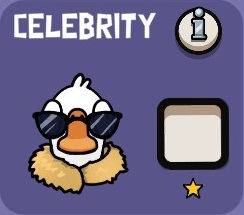
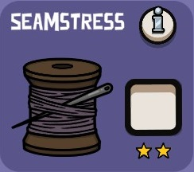

Classes Boas
Astral
Envie seu espírito através das paredes para ver em outras áreas. Enquanto estiver na forma fantasma, você é daltônico.
Vingador
Você pode matar temporariamente se vir alguém morrer.
Observador de passaros
Você pode ver através das paredes com visão limitada do túnel e também ver um pouco mais longe.
Guarda-Costas
Proteja seu alvo designado para ganhar um bônus. Se você estiver entre seu alvo e o assassino, você morre.
Canadense
Seu corpo irá se auto-relatar após 1 segundo se você for morto ou engolido.
Celebridade
Todos os gansos e apenas os GANSOS são alertados quando você é morto.
Detetive
Você pode investigar pássaros para ver se eles mataram na mesma rodada.
Engenheiro
Você pode desabafar temporariamente e ver quando e onde os patos vivos usam suas sabotagens.
Cartomante
Você verá os possíveis patos nas reuniões.
Caçador de recompensas
Complete tarefas para aumentar sua recompensa e sobreviva para ganhar muita prata. Se você morrer, o assassino roubará sua recompensa.
Lobista
Obtenha votos nas reuniões para ganhar a habilidade de matar.
Chaveiro
Você pode abrir a porta da prisão sem encontrar uma chave/cartão-chave. Cuidado com quem você tira da prisão.
Amante
Como um ganso, permaneça vivo com o seu parceiro, que será um ganso ou um pato. Se um de vocês morrer, o outro também morre.
Médium
Você pode ver a quantidade de fantasmas que estão no jogo, indicando quando os pássaros potencialmente morrem.
Mimico
Os patos veem você como um pato e o fogo amigo está habilitado para os Patos, o que significa que eles podem matar seus próprios companheiros.
Agente funerário
Investigue um cadáver para ver qual é o papel do pássaro morto. Na reunião , você vê as funções dos órgãos fiscalizados.
Politico
Você ganha no empate eleitoral e não pode ser mandado para a prisão.
Sheriff
Você pode matar qualquer um, mas se matar um ganso, você também morre.
Stalker
Você é capaz de rastrear a localização de um pássaro por meio de uma seta.
Street Urchin

Você pode destrancar portas de dentro de uma sala. Isso está disponível apenas em Ancient Sands.
Tracker
You can see where birds are located outside when a sandstorm occurs. This is only available in Ancient Sands.
Vigilante
Mate um pássaro sem consequências. Escolha sabiamente.
Costureira
Você pode comparar a corrupção uma vez por rodada.
Sacerdote(isa)
Você está imune aos efeitos da corrupção.
Inquisitor
Você pode investigar os jogadores para ver se eles estão corrompidos. Os patos parecerão corrompidos.
Saint
Você está imune aos efeitos da corrupção.
Caçador de Demônios
Você pode matar uma vez sempre que for corrompido.
Amante
Como um ganso, você permanece vivo com seu parceiro, que será um pato que você precisa proteger. Se um morrer, o outro também morre.
Villager
Pode matar escravos e deve eliminar o monstro disfarçado para vencer. Você também pode sobreviver quando o tempo acabar para vencer.
Classes Más
Assasino
Você pode investigar os jogadores para ver se eles estão corrompidos. Os patos parecerão corrompidos.
Canibal

Você está imune aos efeitos da corrupção.
Demolidor

Você pode matar uma vez sempre que for corrompido.
Ninja

Como um ganso, você permanece vivo com seu parceiro, que será um pato que você precisa proteger. Se um morrer, o outro também morre.
Drone

Pode matar escravos e deve eliminar o monstro disfarçado para vencer. Você também pode sobreviver quando o tempo acabar para vencer.
Telepato

Você pode investigar os jogadores para ver se eles estão corrompidos. Os patos parecerão corrompidos.
Grande Sacerdote
Você está imune aos efeitos da corrupção.
Hitman
Você pode matar uma vez sempre que for corrompido.
ladrão de indentidade

Como um ganso, você permanece vivo com seu parceiro, que será um pato que você precisa proteger. Se um morrer, o outro também morre.
Invisivel
Pode matar escravos e deve eliminar o monstro disfarçado para vencer. Você também pode sobreviver quando o tempo acabar para vencer.
Metamorpho

Você pode investigar os jogadores para ver se eles estão corrompidos. Os patos parecerão corrompidos.
Festeiro

Você está imune aos efeitos da corrupção.
Proficional

Você pode matar uma vez sempre que for corrompido.
Serial Killer

Como um ganso, você permanece vivo com seu parceiro, que será um pato que você precisa proteger. Se um morrer, o outro também morre.
Apanhou ficou calado

Pode matar escravos e deve eliminar o monstro disfarçado para vencer. Você também pode sobreviver quando o tempo acabar para vencer.
Espião

Você pode investigar os jogadores para ver se eles estão corrompidos. Os patos parecerão corrompidos.
Trollante

Você está imune aos efeitos da corrupção.
Carregador de corpos

Você pode matar uma vez sempre que for corrompido.
Amante
Como um ganso, você permanece vivo com seu parceiro, que será um pato que você precisa proteger. Se um morrer, o outro também morre.
Villager
Pode matar escravos e deve eliminar o monstro disfarçado para vencer. Você também pode sobreviver quando o tempo acabar para vencer.
Inquisitor
Você pode investigar os jogadores para ver se eles estão corrompidos. Os patos parecerão corrompidos.
Saint
Você está imune aos efeitos da corrupção.
Caçador de Demônios
Você pode matar uma vez sempre que for corrompido.